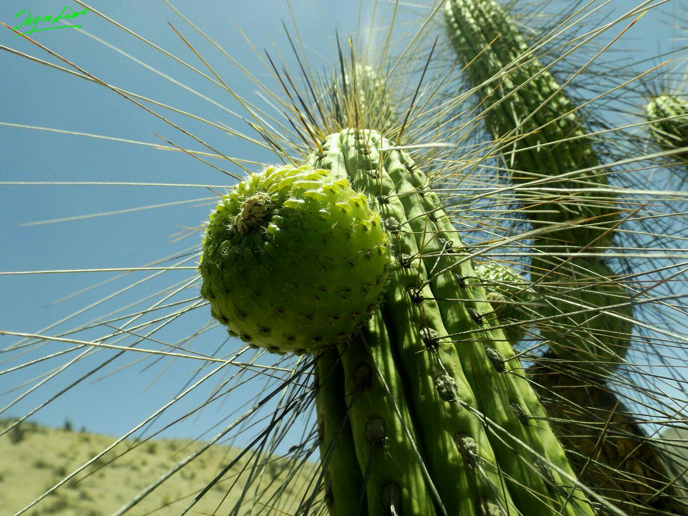
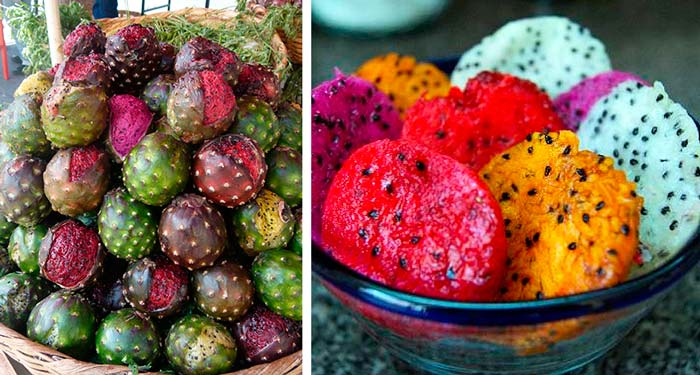

Propiedades
Es un fruto jugoso con un bajo contenido en azúcar con un sabor ligeramente acido, presenta gran cantidad de calcio y fosforo, conteniendo así mismo gran cantidad de potasio. Por ello, posee grandes propiedades beneficiosas para el organismo, se dice que disminuye el hambre, regula la sed y posee propiedades curativas tales como: Obesidad, gastritis, ulceras, hígado, anemia, diabetes, osteoporosis, estreñimiento, antitumoral, anti estrés, soriais y alergias. Además, se considera un antioxidante natural muy poderoso; sin embargo, el Sanky es un fruto y no un medicamento, por lo que se recomienda su uso constante para repotenciar sus propiedades.
Ubicación
Es endémica de Perú, es un cactus de las colinas cercanas a la ciudad de Arequipa (sur de Perú), donde vive en lugares xerofítico entre 2.000 y 3.500 metros sobre el nivel del mar, en Arequipa se lo puede encontrar en la localidad de Chiguata y en Yarabamba.
Hábitat (Clima & Agua)
El Sanky o Corryocactus brevistylus (Nombre científico), crece en laderas de cerros, lugares pedregosos, arenosos y rocosos, con poca agua o humedad; y su área de mayor concentración de plantas está entre los 2.500 a 3.300 msnm. No tolera temperaturas de más de 10 ºC
Variedades
Es una tribu de cactus columnares que se compone de plantas muy grandes, con ramas y arbustos. Se comen frescos y maduros, son ácidos y agradables. Además de su consumo se hacen jugos, mazamorras, bebidas calientes, además de consumirlo directamente por sus propiedades hidratantes y refrescantes. Entre las diversas variedades tenemos: Tuna blanca y roja, Xoconostle, Pitahaya o Pitaya, Copao, Garambullo.